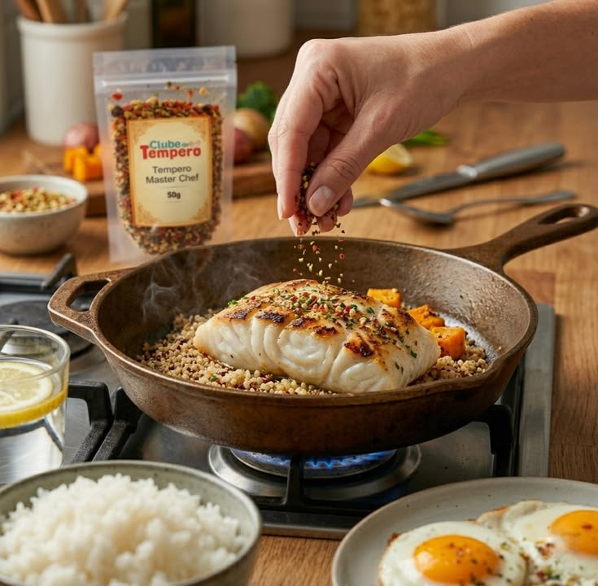

Mantenha a faca afiada
Leitura de 3 minFaca sem fio exige mais força e escorrega com mais facilidade. Afiar com regularidade deixa o corte limpo e o preparo mais seguro.
- Use a chaira antes de cozinhar
- Afie na pedra a cada poucos meses
- Nunca lave a faca na máquina de lavar louça

Tempere em camadas
Leitura de 3 minAdicionar sal e temperos em momentos diferentes constrói sabor. Um pouco no refogado, um pouco no meio do cozimento e o ajuste final no prato.
- Prove sempre antes de corrigir
- Ácidos como limão e vinagre avivam o prato no fim
- Ervas frescas entram no final; as secas, no início

Panela quente, comida dourada
Leitura de 4 minPara selar carnes e legumes, aqueça bem a panela antes de colocar o óleo e não amontoe os alimentos. O vapor impede o dourado.
- Seque bem a carne com papel toalha
- Deixe-a descansar fora da geladeira 20 minutos antes
- Vire só quando soltar sozinha da panela